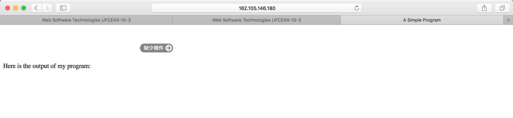

Homework 1
On Safari (Mac OS X)
It seems that most browsers have disabled Java Applet by default due to security issues.
On Safari (iOS)
Mobile devices don't support Java at all.
Homework 2
AWT
Swing
Homework 3
Homework 4
AWT directly invokes native system GUI code, which won't behave the same on every machine. Swing is pure-Java GUI. Swing uses AWT to implement itself, acting as a wrapper of AWT, thus ensuring identical behavior on every machine.